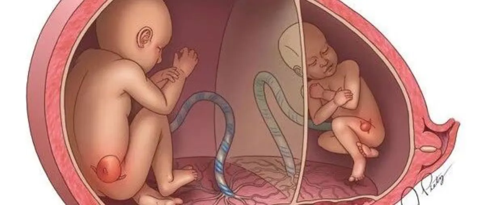
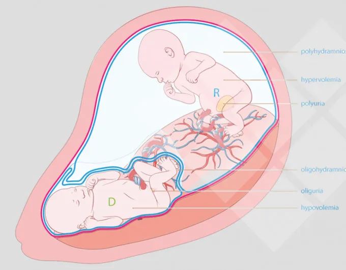
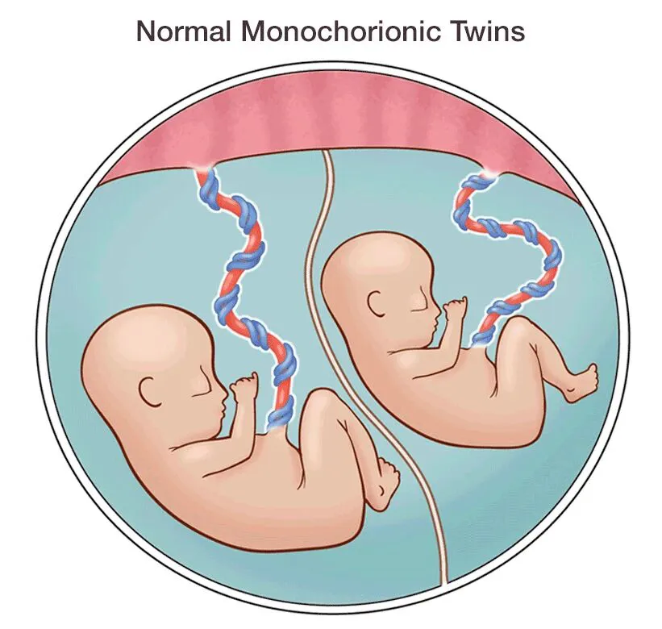
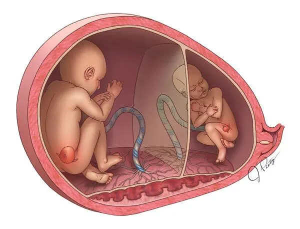
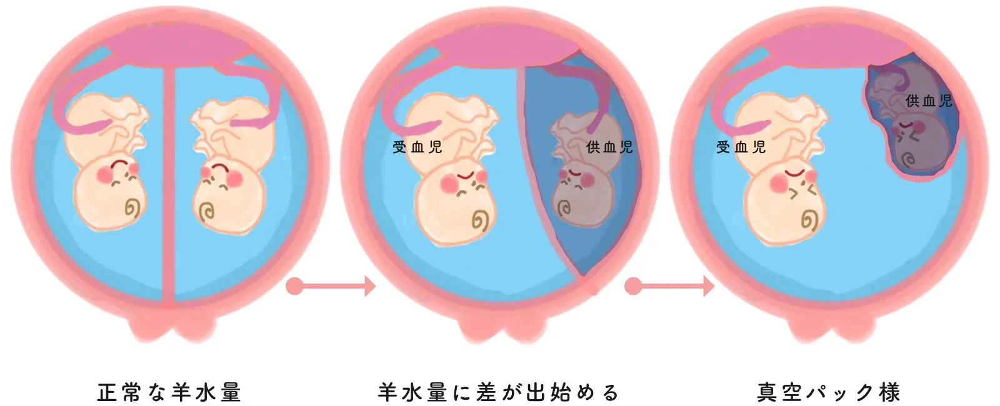

文|圆圈妈
图|来自网络
【01】
从一开始的两条线，到后来发现是同卵双胞胎，大家都说双胞胎是加倍幸福，但是在怀孕过程中，真的也是加倍煎熬。
初期不稳定，持续性的出血。到中期13周的部分胎盘剥落，还以为到20周就可以进入稳定放松阶段，谁知道，做完高层次超音波检查之后，现在又有要担心烦恼的地方了。
其实在台大跟禾馨一知道我是同卵双胞胎，医生就有提醒，一定要特别注意「双胞胎输血症候群」。
台大徐医师说，如果突然体重瞬间变重，或肚子大的很快，千万不要以为是双胞胎正常的，尤其是肚子有点像气球那样绷绷的，肚皮变的有点亮亮的那样，就要赶快回医院检查。
这次发现，是在禾馨的高层次，医生觉得大的宝宝心脏好像有点肥大，医生说，看两个小孩的发展状况，（体重差距比例、羊水量多寡以及姐姐的心脏可能有点过于肥大，怕做功过强）一个小孩的羊水太多，另一个小孩的羊水太少。
现在就比较担心因为羊水的张力导致容易破水之类，总之，医生说按照经验，很有可能会发展成「双胞胎输血症候群」。
我问医生，那我能做什么？能注意什么？却好像什么都没办法作，只能每个礼拜密切追踪跟观察。回家之后，网络上面数据一查，我都快昏倒了。
双胞胎输血症候群 （twin-twin transfusion syndrome， TTTS）诊断判定的三项标准：同性别双胞胎，单一胎盘，羊水过多的胎儿（maximum vertical pocket （MVP） ≥ 8 cm， 羊水过少的胎儿MVP ≤ 2 cm）
按照我的高层次产检报告，a宝宝的羊水最大直径有9.56cm，b宝宝的羊水量正好在边缘，所以医生后来说要继续观察，但很有可能就会成为ttts。
我是在20周高层次的时候发现的，而在二十六周前出现输血症候群的宝宝，若未积极治疗，只有不到一成可以存活。即使幸存，也有高达七成五出现脑性麻痹。
我问医生，有什么治疗方法？
医生说，在26周以前，会透过雷射手术把两个小孩有交通的血管阻断。26周之后，就是重复性的羊水抽放。
我继续追问，会有什么后遗症吗？做了这些治疗，两个宝宝都会好好的吗?
医生想了一下，他说我既然问了，他也不能不说。因为雷射的风险也很高，即使重复抽放羊水，出生后胎儿也有脑性麻痹的机率。
我每天祈祷，希望两个宝宝可以顺利长大，真的很担心他们要动手术。现在，能做的就是每个礼拜回医院复诊，追踪两个孩子的生长状况。
图片来自于https://japaneseclass.jp
【02】
以上是来自台湾社交网站痞客邦一双胞胎妈妈分享的帖子。
正在单绒双羊孕中的你此刻是否感同身受？
曾经经历过单绒双羊妊娠的你是否觉得似曾相识？
作为4年前的单绒双羊准妈妈，这段四维彩超的经历太深刻了！看过我的双胎日记的读者们应该对这个画面很熟悉：
在北大医院做胎儿会诊（三维彩超），我从医生的闲聊中得知两胎儿一大一小，当时医生并没有过多地提示，反倒是我一直追着医生问TTTs。
好在那位主任医生是位性情中人，没有回避话题也没有深入，只告诉我，双胎一大一小是普遍现象，体重相差不超过20%则不必过多担心，只需要持续动态观察两胎儿的羊水和体重。
以前，我把NT当作小考，孕中期的四维彩超（部分地区只能做三维）是大考，孕后期的保胎是冲刺，上手术台剖腹是决一死战！
怀孕那么温馨幸福的事情搁我这，就只有“悲壮”一词来形容了！
非常心疼单绒双羊的准妈妈。
想要欢呼雀跃，却要被TTTs 活生生吓到半死，只能一脸惨淡愁容地度过这个看似让人羡慕嫉妒恨，但背后却是一条浑身上下都忐忑不安的双胎孕育之路。
四维彩超有惊无险通过后，我对TTTs的忌惮之心下降了不少！很明显，在与TTTs的擂台赛上半场，我赢了！
我也不知道是哪里来的勇气！居然敢如此轻视这个号称同卵双胎的天敌---双胞胎输血综合征。
也许是那位B超医生的安慰，也许是一路走来慢慢熬出来的信心，也许是孕期已过大半，看到了盼头，也许是即将为人母，心态和角色的转变,内心在悄悄地变大变强…
图片来自于https://japaneseclass.jp
【03】
双胎妊娠指南中提到TTTs发生率占单绒毛膜囊双胎的10%--15%。
我不知道这个结论是否科学，从建号建群开始就陆陆续续接触到多例疑似或确诊双输的案例：
18周发现羊水差异较大，20周就被确诊双输1期。
22周四维彩超还好好地，25周就发现一胎儿羊水低于2cm。
一路绿灯熬到32周，差不多要生的节奏了，突然一个腹痛，B超显示一胎儿已经供血不足了！
除此之外，还有很多默默取关退群的…不知道是因为TTTs或者其他…
在运营公众号孖仔帮这一年多来，接触最多的就是单绒双羊准妈妈，看过最多的是单绒双胎的B超单，准妈妈们在入群前无一例外被网上众多关于TTTs的负面信息吓到花容失色，惴惴不安！
我经常在大半夜还能收到关于TTTs的求助。承蒙信任，圆圈妈妈不是医生，我同样是个如你们这般恐惧无助的单绒双羊妈妈，只是很幸运地熬出来了！
我只能给到建议，根据你们提供的症状分析当前情况，提供些双胎妊娠行业内的专家医院，当务之急尽快找双输方面比较权威的医院做进一步检查诊断和后续的治疗！
同时，为了确保有需要求助的准妈妈们快速找到就医方向，第一时间获取到解决方案，我把双胞胎孕育群按绒毛膜性分成单绒和双绒，根据地区建立了双胞胎同城群，已经启动的有北京，上海，广州，深圳，方便群友们分享各自的就医经历，推荐北上广深的名医资源，帮助更多有特殊妊娠状况突发的准妈妈找准医院，找对医生。
让怀上双胞胎的姑娘们找到组织，找到归属，抱团取暖，共同度过这漫长忐忑的双胎妊娠。
图片来自于https://japaneseclass.jp
【04】
综合自己的经历和我建立公众号遇到的案例，给出以下单绒双羊妊娠（MCDA）的注意事项：
1，简单粗暴的建议：
做好心理准备和资金准备，虽然单绒双羊大概率都会生出一对健康的同卵双胞胎，但不排除意外的可能。
假设万一，TTTs来了，你也能第一时间知道该去哪个医院，找哪个医生，会有哪些治疗方案，以及将来的那些未知数！一旦确定治疗，孕妈和宝宝们都需要一大笔钱来支持！这是个事实！
2，产检提示：
根据《2017年美国放射学会多胎妊娠超声检查指南解读》，给到单绒双羊双胎妊娠的以下产检提示。
建议孕16周开始，每隔2周一次B超，密切关注宫颈管长度和两胎儿的羊水，体重等重要参数。
若是任一胎儿NT值增厚，在后期的产检要尤其多注意动态观察，因为约25%的单绒毛膜双胎发生NT不一致≥20%的情况，其发生严重TTTS 的风险增加，（详情请参考1 双胎妊娠的早孕期超声检查（1.4））
找当地的权威医院建档产检，挂高危门诊或双胎门诊，约有双胎经验的产科医生，遵医嘱！
总之，改补的补，改吃的吃，改喝的喝！改睡的睡，以不变应万变！
3：善意提醒：
不要100%完全相信网上的信息，包括双胞胎妈妈群里的经验分享，即便是那些看起来很励志，满满正能量的成功保胎经验，也要有所保留地参考借鉴。
每个人的孕育情况不一样，不能全盘对号入座，了解太多，知道太杂，越容易失去判断能力。
相信自己的直觉吧，感觉不妥了，直接找专业医生！
今天见红了，今天胎动有点异常，今天莫名头晕，最近肚子一下子大了很多…要不要看医生？诸如以上这些问题…有时间在群里问一个未必有结果的答案，还不如直接打个车去医院看下更放心！
4：正确方向：
看科普文献！所有的恐惧皆源于无知！
双胎妊娠要在战略上藐视敌人，战术上重视敌人，多一些知识储备，知己知彼，方能百战不殆。
推荐以下较权威的文献和科普文章：
《双胎妊娠》
《2017年美国放射学会多胎妊娠超声检查指南解读》
《英国伦敦胎儿医学基金会--多胎妊娠》
《双胎输血综合征》
《双胎输血综合征的治疗进展与妊娠结局》
《双胎发育不均衡与母婴并发症的研究进展》
《双胎妊娠临床处理指南(第二部分)——双胎妊娠并发症的诊治》
《双胎妊娠临床处理指南(第一部分)-双胎妊娠的孕期监护及处理》
孖仔帮公众号输入“科普”获取以上科普文献的电子档！
还有段涛医生的【怀孕那些事】系列文章（非常适合多愁善感的孕妈阅读，包你读完豁然开朗）
若英文阅读无障碍，可参考以下外文网站：
https://en.fetusjapan.jp/
https://en.wikipedia.org/wiki/Twin-to-twin_transfusion_syndrome
https://fetus.ucsf.edu/ttts
https://rarediseases.org/rare-diseases/twin-twin-transfusion-syndrome/
5，最后，给你13800138000个拥抱：
别哭！别急！别怕！
期待一下吧！9个月后，会有一对性别相貌一模一样的双胞胎宝宝来到你的身边，会做神同步的动作惹你哭，让你疯，逗你玩，甚至尿你一身…而你只会越来越爱他们！
微笑着恭喜下自己吧！
马上要当妈妈了！再也不是生气了就竖中指，不开心就喝啤酒吃炸鸡的少女了，为了两宝宝们，更应该坚强勇敢一点！
-END-
今日互动话题
#确诊单绒双羊双胎，你是惊喜还是惊吓？#
评论区聊一聊呗！
一关注孖仔帮一




